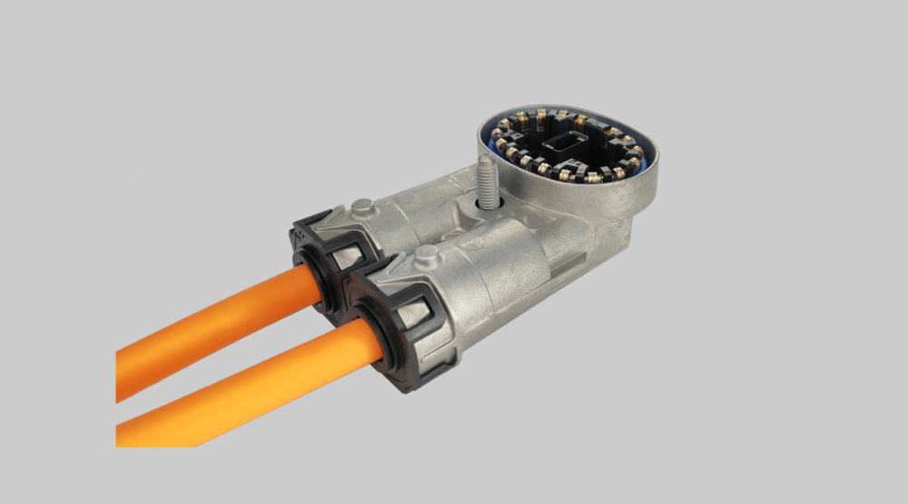

Automated visual inspection system for high-voltage connector assemblies. Detects missing pins, surface defects, and incomplete components using YOLOv8 object detection — with a full industrial HMI, real-time telemetry, and Grafana dashboards.
The HVS 420 and HVS 240 are industrial high-voltage connectors used in electrical assembly lines at Flacara Electric Romania. Each connector contains 20 gold pins arranged in two concentric rings, along with a locking ring, cable entry ports, and sealing components.
Manual inspection was slow and inconsistent. This system automates it: a webcam (or industrial camera) feeds frames into a YOLOv8 model that detects every component in real time. A configurable decision engine applies PASS/FAIL rules, and the verdict appears on the HMI in under 50 ms.
The system was developed as both a university programming project and a practical tool for use on Flacara's actual assembly equipment — making it simultaneously academic and production-grade.
All 20 pins detected, required components present, no surface defects, confidence ≥ 60%
Missing pin(s), low confidence, absent component, or scratch / deformation detected
The system is structured in four layers: image capture, ML inference, business logic, and telemetry. Each layer is decoupled so the model, camera source, and PASS/FAIL thresholds can be changed without touching the others.
Webcam, folder of images, or industrial camera (Basler / IDS). Source type set in config.yaml — swap without code changes.
Runs inference on each frame. Detects pins, connector housing, components, and defects. Transparent mock fallback if no model file is present.
Applies four configurable rules: pin count, confidence threshold, required components, no visual defects. Returns PASS or FAIL with reason list.
PyQt6 interface shows live feed, verdict, confidence bar, and history table. Result is written to InfluxDB; Grafana renders the dashboard.
# 7 object classes the model is trained to detect
YOLO_CLASSES = [
"pin", # 0 — individual gold contact pin
"connector", # 1 — whole housing bounding box
"locking_ring", # 2
"cable_entry", # 3 — orange cable entry port
"sealing", # 4
"scratch", # 5 — surface defect
"deformation", # 6 — bent/damaged housing
]
def inspect(self, frame: np.ndarray) -> dict:
if self._engine == "yolov8":
result = self._run_yolo(frame)
else:
result = self._run_mock(frame)
result["inference_time_ms"] = round(
(time.perf_counter() - t0) * 1000, 1
)
return resultAll thresholds live in config.yaml so the line operator can adjust sensitivity without touching code. The decision engine applies four rules in sequence — one failure reason is enough to FAIL the entire connector.
def evaluate(self, result: dict) -> dict:
reasons = []
# Rule 1 — confidence threshold
if result["confidence"] < self._min_conf: # default 0.60
reasons.append(f"Low confidence: {result['confidence']:.0%}")
# Rule 2 — pin count (with spatial position lookup)
if result["pins_detected"] < self._min_pins: # default 20
missing = self._min_pins - result["pins_detected"]
missing_ids = [d.replace("missing_pin_","")
for d in result["defects"]
if d.startswith("missing_pin_")]
reasons.append(f"Missing pins: {missing} (positions {', '.join(missing_ids)})")
# Rule 3 — required components present
if self._enforce_components:
for comp in self._required_components: # locking_ring, cable_entry, sealing
if f"missing_{comp}" in set(result["defects"]):
reasons.append(f"Missing component: {comp}")
# Rule 4 — no visual defects
if self._enforce_no_defects:
visual = [d for d in result["defects"]
if d in ("scratch_housing","scratch","deformation")]
if visual:
reasons.append("Visual defects: " + ", ".join(visual))
out = dict(result)
out["status"] = "PASS" if not reasons else "FAIL"
out["fail_reasons"] = reasons
return out
Stateless design — evaluate() takes a result dict and returns an enriched copy.
Nothing is mutated; the original detector output is preserved alongside the final verdict.
Every inspection result is written to InfluxDB 2.7 immediately after the verdict.
If InfluxDB is unavailable, the system falls back to a local fallback_log.jsonl
— nothing is ever lost.
Grafana (auto-provisioned via Docker Compose) reads from InfluxDB and displays 11 panels on a 10-second refresh cycle. The entire telemetry stack starts with one command:
docker compose up -d// Grafana dashboard panels
| Component | Technology | Role |
|---|---|---|
| ML Inference | YOLOv8 (Ultralytics) | Object detection — pins, components, defects |
| Image Processing | OpenCV + NumPy | Frame capture, annotation, colour conversion |
| HMI / GUI | PyQt6 | Industrial interface — live feed, verdict, history table |
| Telemetry DB | InfluxDB 2.7 | Time-series storage of every inspection result |
| Dashboards | Grafana 11 | 11 real-time panels, 10s refresh, auto-provisioned |
| Containerisation | Docker Compose | One-command telemetry stack deploy |
| Configuration | YAML (config.yaml) | All thresholds, camera source, model path — no recompile |
| Language | Python 3.11 | Windows 11 · tested on CPU and CUDA |
Full codebase — detector, decision engine, PyQt6 HMI, InfluxDB client, Grafana dashboard JSON, and Docker Compose config.